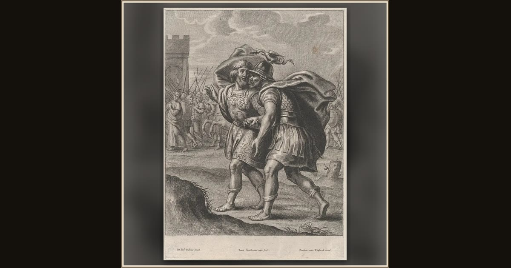

Achilles and Priam, in conversation outside of Troy
Lucas Vorsterman II · ca. 1644–66 · met
Priam and Achilles in conversation outside Troy: the aged king whose late disasters Aristotle cites against calling any man happy before his end (1.9). Explore its place in Aristotle's Nicomachean Ethics, Book I, section 9.